我不喜欢死记硬背，我更偏向于弄清来龙去脉，理解性地记忆。比如下面这张图，我们将围绕这张图来思考几个问题。

上面的这张图来自一个PPT。它概括了数据结构中的所有常见的排序算法。现在有以下几个问题：
1、每个算法的思想是什么？
2、每个算法的稳定性怎样？时间复杂度是多少？
3、在什么情况下，算法出现最好情况 or 最坏情况？
4、每种算法的具体实现又是怎样的？
这个是排序算法里面最基本，也是最常考的问题。下面是我的小结。
一、直接插入排序(插入排序)。
1、算法的伪代码(这样便于理解)：
INSERTION-SORT (A, n) A[1 . . n]
for j ←2 to n
do key ← A[ j]
i ← j – 1
while i > 0 and A[i] > key
do A[i+1] ← A[i]
i ← i – 1
A[i+1] = key
2、思想：如下图所示，每次选择一个元素K插入到之前已排好序的部分A[1…i]中，插入过程中K依次由后向前与A[1…i]中的元素进行比较。若发现发现A[x]>=K,则将K插入到A[x]的后面，插入前需要移动元素。
3、算法时间复杂度。
最好的情况下：正序有序(从小到大)，这样只需要比较n次，不需要移动。因此时间复杂度为O(n)
最坏的情况下：逆序有序,这样每一个元素就需要比较n次，共有n个元素，因此实际复杂度为O(n2)
平均情况下：O(n2)
4、稳定性。
理解性记忆比死记硬背要好。因此，我们来分析下。稳定性，就是有两个相同的元素，排序先后的相对位置是否变化，主要用在排序时有多个排序规则的情况下。在插入排序中，K1是已排序部分中的元素，当K2和K1比较时，直接插到K1的后面(没有必要插到K1的前面，这样做还需要移动！！)，因此，插入排序是稳定的。
5、代码(c版) blog.csdn.com/whuslei
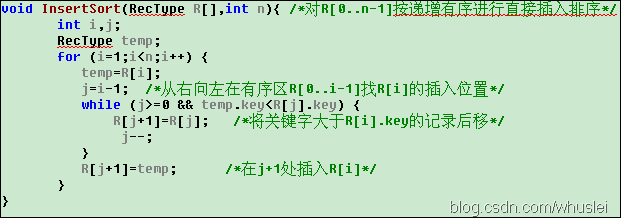
二、希尔排序(插入排序)
1、思想：希尔排序也是一种插入排序方法,实际上是一种分组插入方法。先取定一个小于n的整数d1作为第一个增量,把表的全部记录分成d1个组,所有距离为d1的倍数的记录放在同一个组中,在各组内进行直接插入排序；然后,取第二个增量d2(＜d1),重复上述的分组和排序,直至所取的增量dt=1(dt
例如：将 n 个记录分成 d 个子序列：
{ R[0]， R[d]， R[2d]，…， R[kd] }
{ R[1]， R[1+d]， R[1+2d]，…，R[1+kd] }
…
{ R[d-1]，R[2d-1]，R[3d-1]，…，R[(k+1)d-1] }
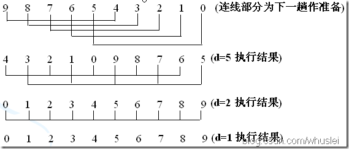
说明：d=5 时，先从A[d]开始向前插入，判断A[d-d]，然后A[d+1]与A[(d+1)-d]比较，如此类推，这一回合后将原序列分为d个组。<由后向前>
2、时间复杂度。
最好情况：由于希尔排序的好坏和步长d的选择有很多关系，因此，目前还没有得出最好的步长如何选择(现在有些比较好的选择了，但不确定是否是最好的)。所以，不知道最好的情况下的算法时间复杂度。
最坏情况下：O(N*logN)，最坏的情况下和平均情况下差不多。
平均情况下：O(N*logN)
3、稳定性。
由于多次插入排序，我们知道一次插入排序是稳定的，不会改变相同元素的相对顺序，但在不同的插入排序过程中，相同的元素可能在各自的插入排序中移动，最后其稳定性就会被打乱，所以shell排序是不稳定的。(有个猜测，方便记忆：一般来说，若存在不相邻元素间交换，则很可能是不稳定的排序。)
4、代码(c版) blog.csdn.com/whuslei
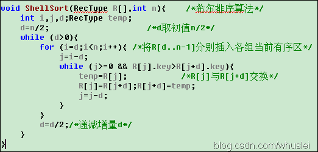
三、冒泡排序(交换排序)
1、基本思想：通过无序区中相邻记录关键字间的比较和位置的交换,使关键字最小的记录如气泡一般逐渐往上“漂浮”直至“水面”。
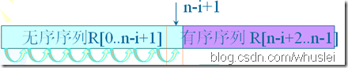 2、时间复杂度
最好情况下：正序有序，则只需要比较n次。故，为O(n)
最坏情况下: 逆序有序，则需要比较(n-1)+(n-2)+……+1，故，为O(N*N)
3、稳定性
排序过程中只交换相邻两个元素的位置。因此，当两个数相等时，是没必要交换两个数的位置的。所以，它们的相对位置并没有改变，冒泡排序算法是稳定的！
4、代码(c版) blog.csdn.com/whuslei
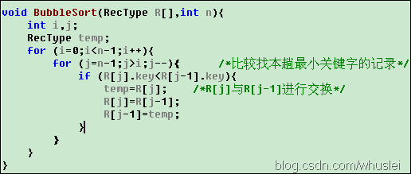
四、快速排序(交换排序)
1、思想：它是由冒泡排序改进而来的。在待排序的n个记录中任取一个记录(通常取第一个记录),把该记录放入适当位置后,数据序列被此记录划分成两部分。所有关键字比该记录关键字小的记录放置在前一部分,所有比它大的记录放置在后一部分,并把该记录排在这两部分的中间(称为该记录归位),这个过程称作一趟快速排序。
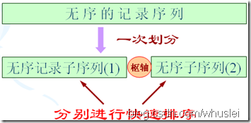 说明：最核心的思想是将小的部分放在左边，大的部分放到右边，实现分割。
2、算法复杂度
最好的情况下：因为每次都将序列分为两个部分(一般二分都复杂度都和logN相关)，故为 O(N*logN)
最坏的情况下：基本有序时，退化为冒泡排序，几乎要比较N*N次，故为O(N*N)
3、稳定性
由于每次都需要和中轴元素交换，因此原来的顺序就可能被打乱。如序列为 5 3 3 4 3 8 9 10 11会将3的顺序打乱。所以说，快速排序是不稳定的！
4、代码(c版)
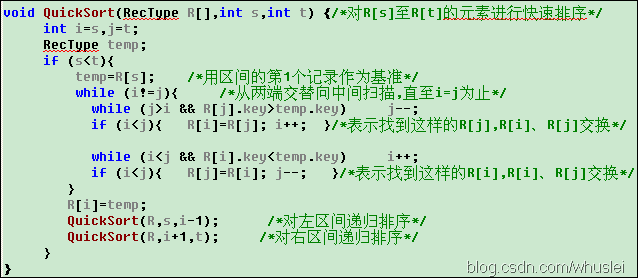
五、直接选择排序(选择排序)
1、思想：首先在未排序序列中找到最小元素，存放到排序序列的起始位置，然后，再从剩余未排序元素中继续寻找最小元素，然后放到排序序列末尾。以此类推，直到所有元素均排序完毕。具体做法是：选择最小的元素与未排序部分的首部交换，使得序列的前面为有序。
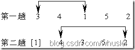 2、时间复杂度。
最好情况下：交换0次，但是每次都要找到最小的元素，因此大约必须遍历N*N次，因此为O(N*N)。减少了交换次数！
最坏情况下，平均情况下：O(N*N)
3、稳定性
由于每次都是选取未排序序列A中的最小元素x与A中的第一个元素交换，因此跨距离了，很可能破坏了元素间的相对位置，因此选择排序是不稳定的！
4、代码(c版)blog.csdn.com/whuslei
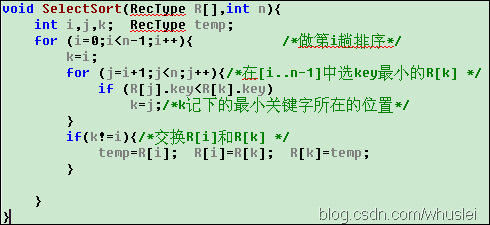
六、堆排序
1、思想：利用完全二叉树中双亲节点和孩子节点之间的内在关系，在当前无序区中选择关键字最大(或者最小)的记录。也就是说，以最小堆为例，根节点为最小元素，较大的节点偏向于分布在堆底附近。
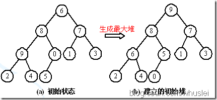 2、算法复杂度
最坏情况下，接近于最差情况下：O(N*logN)，因此它是一种效果不错的排序算法。
3、稳定性
堆排序需要不断地调整堆，因此它是一种不稳定的排序！
4、代码(c版，看代码后更容易理解！)
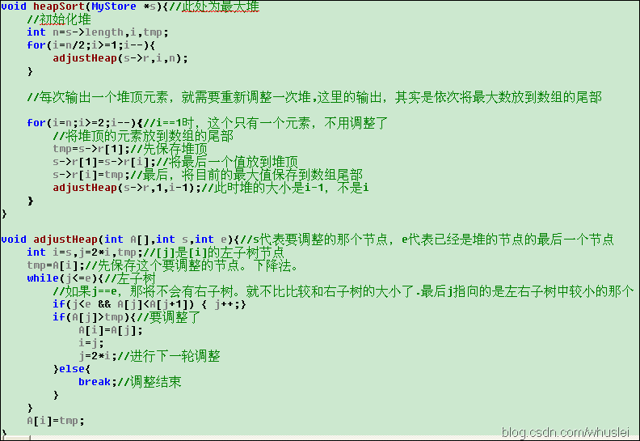
七、归并排序
1、思想：多次将两个或两个以上的有序表合并成一个新的有序表。
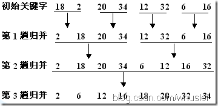 2、算法时间复杂度
最好的情况下：一趟归并需要n次，总共需要logN次，因此为O(N*logN)
最坏的情况下，接近于平均情况下，为O(N*logN)
说明：对长度为n的文件，需进行logN 趟二路归并，每趟归并的时间为O(n)，故其时间复杂度无论是在最好情况下还是在最坏情况下均是O(nlgn)。
3、稳定性
归并排序最大的特色就是它是一种稳定的排序算法。归并过程中是不会改变元素的相对位置的。
4、缺点是，它需要O(n)的额外空间。但是很适合于多链表排序。
5、代码(略)blog.csdn.com/whuslei
八、基数排序
1、思想：它是一种非比较排序。它是根据位的高低进行排序的，也就是先按个位排序，然后依据十位排序……以此类推。示例如下：
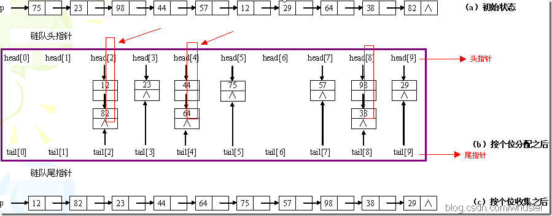
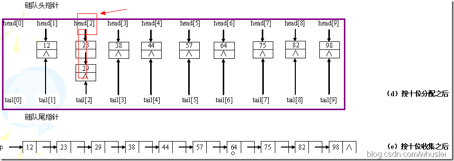 2、算法的时间复杂度
分配需要O(n),收集为O(r),其中r为分配后链表的个数，以r=10为例，则有0～9这样10个链表来将原来的序列分类。而d，也就是位数(如最大的数是1234，位数是4，则d=4)，即"分配-收集"的趟数。因此时间复杂度为O(d*(n+r))。
3、稳定性
基数排序过程中不改变元素的相对位置，因此是稳定的！
4、适用情况：如果有一个序列，知道数的范围(比如1～1000)，用快速排序或者堆排序，需要O(N*logN)，但是如果采用基数排序，则可以达到O(4*(n+10))=O(n)的时间复杂度。算是这种情况下排序最快的！！
5、代码(略)
总结： 每种算法都要它适用的条件，本文也仅仅是回顾了下基础。如有不懂的地方请参考课本。
如有转载，请注明:blog.csdn.com/whuslei